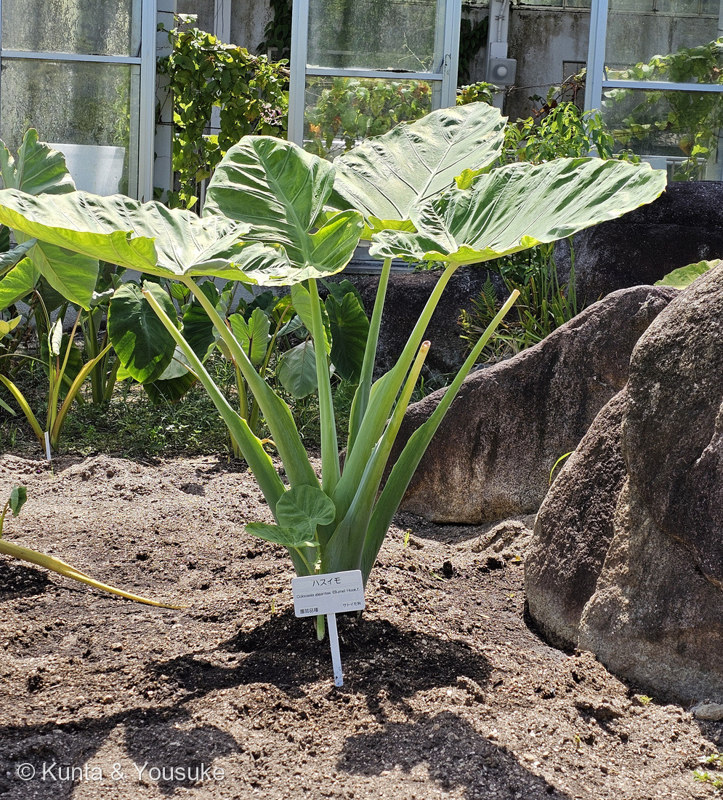
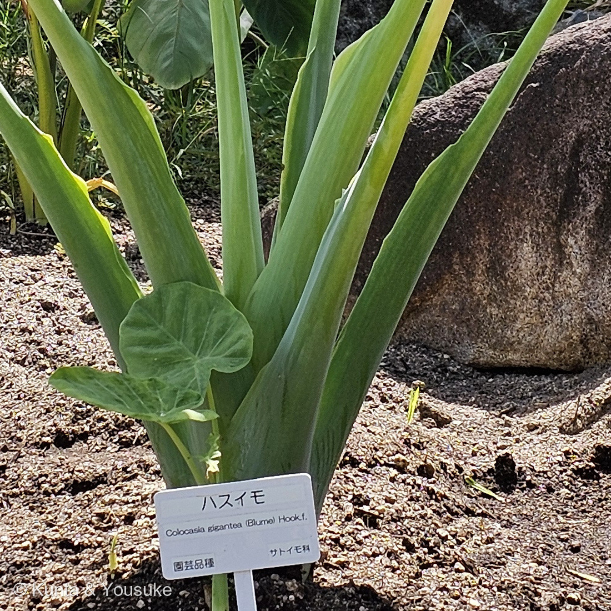
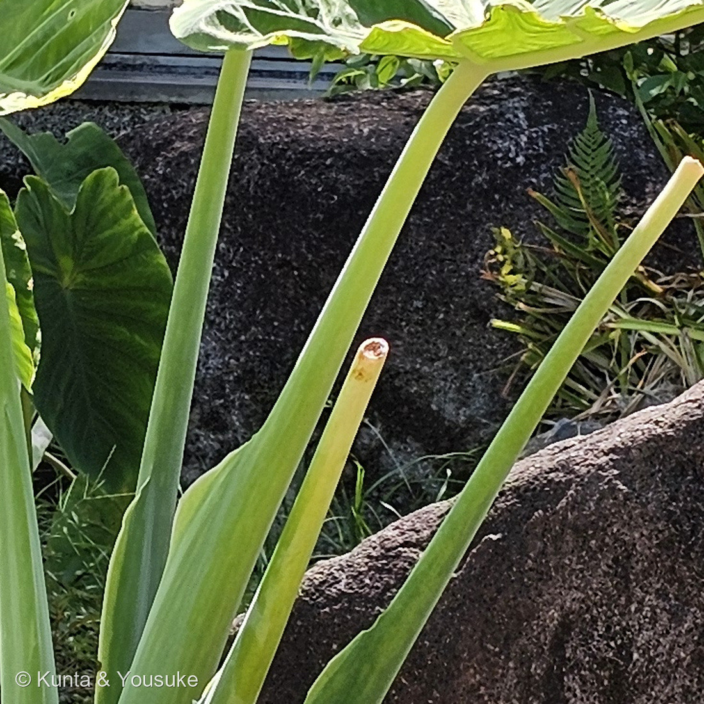
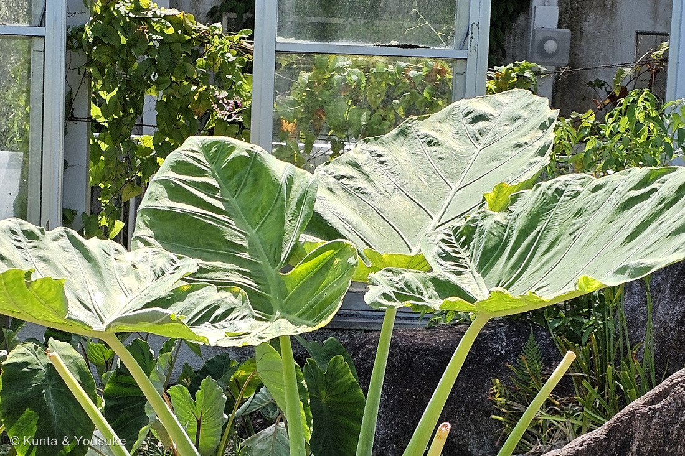

地図を読み込んでいるよ…
🔍 写真も地図も、押しているあいだ拡大して見られるよ（スマホは指を置いてすこし待ってね）。
🌍 の地図＝この子がもともと自生している場所を緑に。ジャワ原産で食用として栽培される（熊本大学薬学部薬用植物園）。⚠日本語版Wikipediaの「ヒマラヤから中国、日本などで栽培されている」は、栽培されている範囲のこと。中国では「大野芋」の名で載っていて、東南アジアから中国南部にかけて自生するとされる。
⭐東南アジアから中国南部にかけての子だよ。熊本大学薬学部薬用植物園の薬草データベースは「ジャワ原産で食用として栽培される」とする。⚠⚠ここで気をつけたいのは、日本語版Wikipediaの「ヒマラヤから中国、日本などで栽培されている」は自生地ではなく、人が作っている場所の話だということ＝⭐だから日本は塗っていない。⭐⭐中国では「大野芋」という名前で載っているので、中国南部の省も塗った（植物智）。⚠国ごとの線引きまで書いた出典の本文には当たれていないので、ここはぼくの塗り分けだよ（236 ネオレゲリアのときと同じあつかい）。⭐⭐⭐そして、この緑の外でいちばん有名な産地が高知県＝「リュウキュウ」の名で、伝統野菜として作られている＝⭐その名前は「沖縄（琉球）から伝わったから」だとされる（日本語版Wikipedia）＝⭐⭐ジャワあたりから、沖縄をへて、高知へ。名前が旅の順路を覚えているんだね。⭐同じサトイモ科の仲間とくらべてみて＝293 アグラオネマもアジアだけれど、239 モンステラは中央アメリカ、048 カラーは南アフリカだよ。
⚠ 地図は国（日本と中国だけ県・省）までしか塗れないから、ほんとうの分布より広く見えていることがあるよ。地図はだいたいの場所。正確なところは、上の文を見てね。
ハスイモ（蓮芋）
Leucocasia gigantea (Blume) Schott
別名 シロイモ リュウキュウ（高知・徳島） ツイモ 青ずいき 中国名 大野芋 英名 giant elephant ear
サトイモ科 · Araceae（ハスイモ属 Leucocasia・オモダカ目 Alismatales）── ⭐図鑑で5人目のサトイモ科（020・048・239・293）／⭐⭐ハスイモ属ははじめて／⚠科は増えないので108科のまま
燻太さんの言葉「これは葉柄を食べるみたいだけど、イモは食べないのかな？」「ハスイモって呼ばれるのは、葉柄がスポンジ状でハスっぽいから?」── ⭐⭐⭐ふたつとも、そのとおりだったよ
⭐⭐⭐⭐⭐ 名前と学名の由来 ── 燻太さんの推理が、そのまま当たっていた
- ⭐⭐⭐⭐⭐燻太さんの言葉＝「ハスイモって呼ばれるのは、葉柄がスポンジ状でハスっぽいから?」──⭐⭐⭐当たりだよ！
- 辻調理師専門学校の食材事典に、はっきり書いてある＝語源「葉柄の断面にレンコンのような小さな穴があるところから。」
- ⭐つまり「ハス」は花や葉のことではなく、レンコン（蓮根）のこと。⭐⭐あの、切ると穴があいている、あれだね。⭐ハスイモの葉柄も、切ると同じように小さな穴がたくさんあいているんだ。⭐だから燻太さんの言った「スポンジ状」という言葉も、そのまま合っている。
- ⭐⭐写真③を見て。──葉柄が1本、まるく平らに切られているでしょう。⭐折れたのではなく、刃物で切られた切り口だよ。⚠でも、そこにあるはずの「レンコンのような穴」までは、この解像度では見えなかった＝⭐だから宿題にしたよ。
- ⭐⭐⭐おまけの発見もあったんだ。──写真②の、下のほうにある小さい葉を見て。⭐葉脈が1点から放射していて、その点が葉のふちではなく、内側にある＝⭐⭐これは 盾状（たてじょう）という葉のつき方で、ハスの葉とまったく同じなんだよ。
- ⚠⚠でも、これは名前の由来ではないと思う。──⭐サトイモの葉も同じ盾状だから、それだけでは「ハス」と呼ぶ理由にならないんだ。⭐由来は、やっぱり葉柄の穴のほう。
⭐⭐⭐ 別の名前が、たくさんある子
- ⭐⭐高知県・徳島県では「リュウキュウ」。──日本語版Wikipediaは「沖縄県（琉球）から導入されたためリュウキュウとも呼ばれる」とする。⭐高知県西部では「ツイモ」、別名は「シロイモ」だよ。
- ⭐お店では「青ずいき」。──葉柄（ずいき）が淡い緑色をしているから。⭐辻調も「葉柄（ズイキ）は淡緑色」と書いている。
- ⭐⭐中国では「大野芋」（植物智）。⭐俗名のひとつが「滴水芋」＝水のしたたる芋で、ちょっと気になっている（⚠しくみを書いた出典はまだ読めていないので、宿題にしたよ）。
- ⭐英名は giant elephant ear（巨大なゾウの耳）や Indian taro（英語版Wikipedia）。⭐写真④の葉を見ると、たしかにゾウの耳だね。
- ⭐属名 Leucocasia の leuco- は、ギリシャ語で「白い」。⚠この属名の由来を書いた出典には当たれていないので、断定はしないでおくね。⭐でも、和名の別名が「シロイモ」なのは、ちょっと面白い一致だと思う。⭐種小名 gigantea は「巨大な」だよ。
⭐⭐⭐⭐⭐ この植物のこと ── 葉柄を食べて、イモは食べない
⭐⭐燻太さんの言葉＝「これは葉柄を食べるみたいだけど、イモは食べないのかな？」──⭐答えは「食べない」。しかも、理由がはっきりしていたよ。
- ⭐⭐⭐⭐辻調理師専門学校＝「葉柄用の品種。葉柄（ズイキ）は淡緑色。芋は食用とはせず、ズイキが生食用に出荷される。」
- ⭐⭐⭐日本語版Wikipedia＝「長い葉柄の芋茎、茎長80センチメートルが食用になる」「塊根は小さくて食用にならない」。
- ⭐⭐⭐⭐⭐つまり「食べない」というより、「食べられるほど大きくならない」んだ。──⭐サトイモがイモを太らせるのに対して、この子は葉柄のほうを伸ばす。⭐⭐同じサトイモ科でも、力の入れどころがちがうんだね。
- ⭐⭐⭐そして、園の名札の4行目を思い出してほしい＝「園芸品種」。──⭐辻調も「葉柄用の品種」と書いている。⭐⭐つまりこの子は、人が「葉柄を食べるため」に選んできた品種なんだ。⚠「イモができないほうへ人が選んだ」と言い切れる出典までは読めていないので、そこはぼくの読みだよ。
- ⭐どんなふうに食べるのか＝熊本大学薬学部薬用植物園は「葉柄を食用とし、酢の物、サラダ、すし、味噌和え、刺身のツマ、煮物、味噌汁などにする」とする。⭐英語版Wikipediaは「miso soup, chanpurū and sushi」＝沖縄のチャンプルーにも使うと書いているよ。
- ⭐⭐産地は高知県で、旬は「一年中」（辻調）。⭐高知の伝統野菜として、ずっと作られてきた子なんだ。⭐「リュウキュウ」という呼び名も、高知のもの。
- ⚠⚠そのままでは食べない子だよ。──日本語版Wikipediaは「水に少しさらして灰汁抜きし」とする。⭐サトイモ科なので、293 アグラオネマで書いたシュウ酸カルシウムの話につながるところだね。
- ⭐食べごこちは、スポンジ状だから汁をよく吸って、しゃくしゃくするらしい。⭐穴があいているという、名前の由来そのものが、そのまま食感になっているんだね。
⭐⭐⭐ 同定について
- ⭐園の名札があるので、種は名札にしたがった＝ハスイモ。⭐写真から言えることは4つ＝①葉柄がとても太く、淡い緑色で、白っぽい粉をふいたように見える（写真②）②小さい葉で、葉柄が葉身の内側につくのが見える＝盾状（写真②）③葉は大きな矢じり形で、脈がくっきり（写真④）④葉柄が切られた切り株がある（写真③）。
- ⚠⚠ただし正直に書くと、この写真だけでサトイモを落としきれたとは言えない。──日本語版Wikipediaは「サトイモの近縁種で、分類上は別種であるが、栽培上はサトイモの同類として扱われる」とする。⭐いちばん確かな手がかりは「葉柄が白っぽい淡緑であること」と「大きさ」だけれど、どちらも品種によって重なるんだ。⭐だからここは名札にたよっているよ。
- ⚠もうひとつ、決められなかったものがある。──葉柄のあいだにクリーム色のものが写っていて、しぼんだ花のようにも見えたのだけれど、拡大しても正体が分からなかった。⭐宿題にしておくね（280 マルバルコウのときと同じあつかいだよ）。
⭐⭐⭐⭐⭐ 名札の学名は、いまは「むかしの名前」になっていた
- 園の名札には Colocasia gigantea (Blume) Hook.f. と書いてある。──⭐調べてみたら、この名前はいまは異名（シノニム）になっていた。
- ⭐IPNI（国際植物名索引）で、両方を引いてみた＝
- Leucocasia gigantea (Blume) Schott／Oesterr. Bot. Wochenbl.／1857年
- Colocasia gigantea (Blume) Hook.f.／Fl. Brit. India／1893年
- ⭐⭐GBIF（世界の生きものの名前の台帳）はこう返してきた＝Leucocasia gigantea＝ACCEPTED（受理）／Colocasia gigantea (Blume) Hook.f.＝SYNONYM（異名）で、その受理名は Leucocasia gigantea (Blume) Schott。
- ⭐英語版Wikipediaも「Leucocasia gigantea (Blume) Schott (1857)」を見出しにして、「Colocasia gigantea (Blume) Hook.f. (1893)」を異名にならべている。⭐中国の植物智にいたっては「注：名称已修订，正名是：大野芋 Leucocasia gigantea」＝名前は改訂されました、正しい名前は…と、まっさきに出してくるよ。
- ⭐⭐⭐⭐そして、ここがいちばん面白いところ。──新しい名前に変わったのではなくて、古いほうの名前に戻ったんだ。⭐Schott の Leucocasia は1857年、Hooker の Colocasia は1893年。⭐⭐36年ぶん、Schott のほうが古い。⭐いちど「サトイモ属にまとめよう」とされて、また「やっぱり別の属だ」と分けられた、ということだね。
- ⚠⚠だから、園の名札はまちがいじゃないよ。──⭐253 ビロウで決めたとおり、名札は、作られたころの知識でできているもの。⭐⭐それどころか、熊本大学薬学部薬用植物園の薬草データベースも、いまも Colocasia gigantea (Blume) Hook.f. を使っている＝⭐日本では、まだこちらの名前が広く使われている、ということなんだ。
⭐⭐⭐ 図鑑で5人目のサトイモ科 ── そして本家がまだいない
- ⭐サトイモ科は、これで5人＝020 フィロデンドロン・048 カラー・239 モンステラ・293 アグラオネマ・この子。⚠科は増えないので108科のまま。⭐⭐きのうアグラオネマを登録したばかりだから、2日つづけてサトイモ科だね。
- ⭐⭐⭐048 カラーのページに、こう書いてあった＝「和名 カイウ（海芋）＝『海をわたってきた芋（サトイモの仲間）』」。──⭐カラーもハスイモも、「芋」の名で呼ばれている。⭐⭐でも、どちらもイモを食べる子ではないんだ。
- ⚠⚠⚠そして、気づいてしまった。──本家のサトイモが、図鑑にまだいない。⭐燻太さんの「見た目はサトイモそっくり」という一言が、そのまま宿題になったよ。⭐⭐だから、おまけはサトイモにした。⭐畑でも直売所でも会えるし、秋にはスーパーにもならぶ。⭐⭐会えたら、「イモを太らせる子」と「葉柄を伸ばす子」を、ならべて見ようね。
- ⭐それと、この写真を撮った前後のコマには009 オジギソウと220 トウゴマが写っていた。──⭐ここは有用植物のコーナーで、「人が使ってきた植物」がならぶ一角なんだ。⭐ハスイモがここに植わっているのは、まさに葉柄を食べる野菜だからだね。
出典：広島市植物公園の名札（ハスイモ／Colocasia gigantea (Blume) Hook.f.／園芸品種／サトイモ科）／IPNI（Leucocasia gigantea (Blume) Schott, Oesterr. Bot. Wochenbl. 1857／Colocasia gigantea (Blume) Hook.f., Fl. Brit. India 1893）／GBIF（Leucocasia gigantea＝ACCEPTED／Colocasia gigantea (Blume) Hook.f.＝SYNONYM）／英語版Wikipedia「Leucocasia gigantea」（(Blume) Schott (1857)／synonym Colocasia gigantea (Blume) Hook.f. (1893)／giant elephant ear・Indian taro／miso soup, chanpurū and sushi）／日本語版Wikipedia「ハスイモ」（別名シロイモ／沖縄県（琉球）から導入されたためリュウキュウとも呼ばれる／長い葉柄の芋茎、茎長80センチメートルが食用になる／塊根は小さくて食用にならない／サトイモの近縁種で、分類上は別種であるが、栽培上はサトイモの同類として扱われる／水に少しさらして灰汁抜きし）／辻調理師専門学校「食材 ハスイモ（蓮芋）」（語源 葉柄の断面にレンコンのような小さな穴があるところから／葉柄用の品種／芋は食用とはせず／産地 高知県／旬 一年中）／熊本大学薬学部薬用植物園 薬草データベース「ハスイモ」（ジャワ原産で食用として栽培される／葉柄を食用とし、酢の物、サラダ、すし、味噌和え、刺身のツマ、煮物、味噌汁などにする）／植物智（iPlant）「大野芋」（注：名称已修订／俗名 滴水芋ほか）。